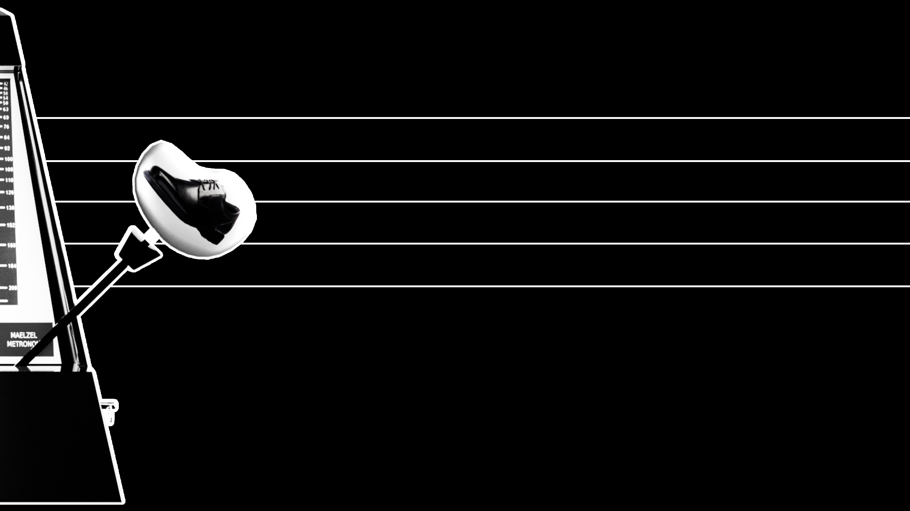
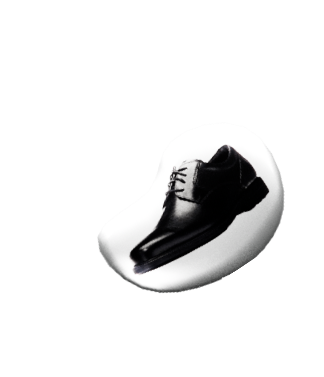
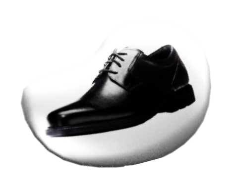
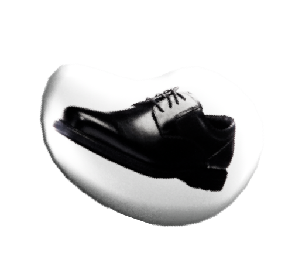
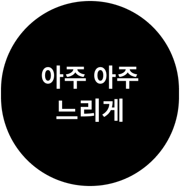

무엇이 당신의 속도를 결정하나요?
악보를 보면 항상 맨 처음 시작에는 박자가 적혀있듯 우리의 삶에도
그에 맞는 속도가 있는게 아닐까요?
우리는 그 속도를 모른채 살아가거나 이 속도가 아님을 알고도
더 빠른 속도로 살아내려합니다.
이러한 현대인에게
속도를 맞춰주고 체크해줄 무언가가
필요합니다.
당신은 어떤 속도로 살아가나요?


Section 13
Section 14
Section 15
Section 15